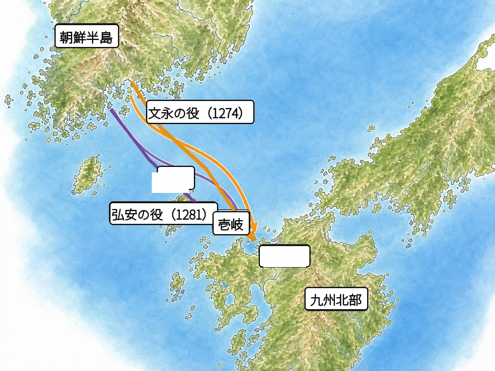
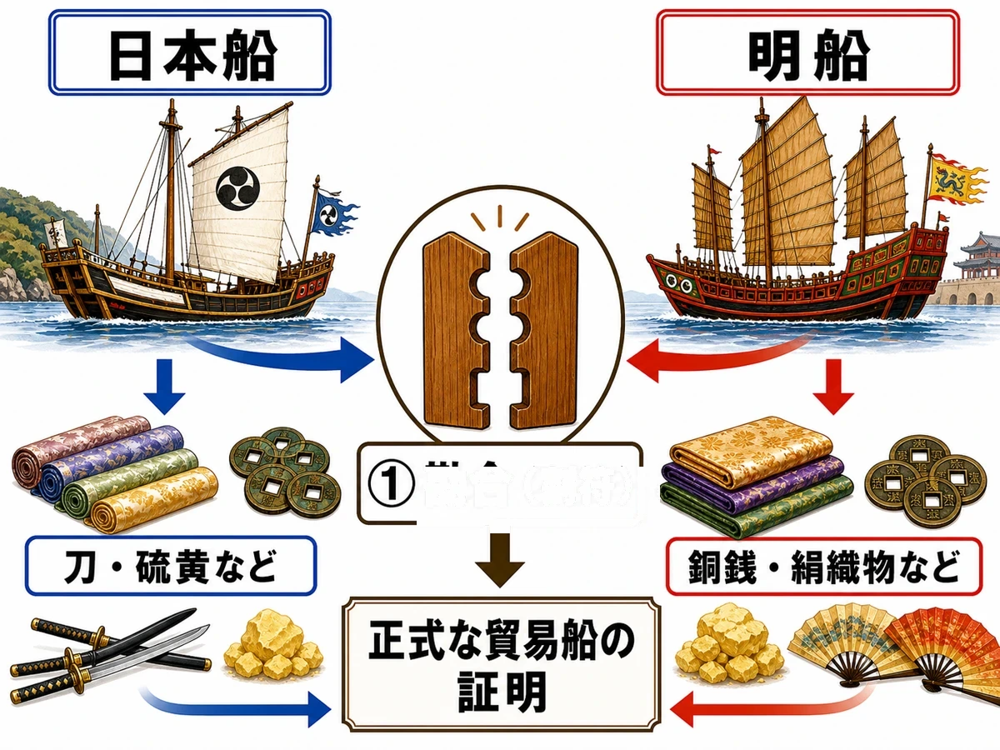

歴史 ⑥問題集
室町時代と中世の世界
モンゴル帝国 〜 応仁の乱
 いっしょに
いっしょにがんばろう！
年
年表でチェック
（ ）をタップすると答えが出るよ。まずは自分で言ってから確かめよう！
| 年代 | できごと |
|---|---|
| 13世紀初め | がモンゴル民族を統一し、モンゴル帝国を建てる |
| 13世紀後半 | が国号をと定め、都を大都に置く |
| 1274年 | 元軍が日本を攻めるが起こる |
| 1281年 | 元軍が再び日本を攻めるが起こる |
| 1297年 | 幕府が御家人を救うためを出す |
| 1333年 | 足利尊氏や新田義貞らによりが滅亡する |
| 1334年 | がを始める |
| 1336年ごろ | 京都の北朝と吉野の南朝が対立するが始まる |
| 1338年 | が征夷大将軍となりを開く |
| 1392年 | が南北朝を統一し、朝鮮半島ではが建てられる |
| 1428年 | 近畿地方でが起こる |
| 1441年 | 幕府が初めて徳政令を出すきっかけとなったが起こる |
| 1457年 | 蝦夷地でアイヌの首長が和人と戦う |
| 1467年 | 京都を主戦場とするが始まる |
1
モンゴル帝国
▶やり方をえらぼう目次にもどれば何度でも変えられるよ
解答
順番
順番
A要点まとめ（ ）をタップして確かめよう
先に参考書で理解する
13世紀初め、はモンゴル高原の遊牧民を統一し、ユーラシア大陸にまたがるを築いた。その孫にあたるは国号をと定め、大都（現在の北京）に都を置いて、朝鮮半島のを従えるとともに日本にも服属を求めた。元に仕えたイタリア人のは、その見聞をもとに『』（世界の記述）を著し、日本を「黄金の国ジパング」としてヨーロッパに紹介した。この書物はのちのヨーロッパのにつながった。また、アラビア半島やインドを結ぶ海の交易ではが活躍し、モンゴル帝国が13世紀末に分裂したのちのトルコにはが成立した。
▶ここからは一問一答答え合わせのやり方をえらぼう
B一問一答1 / 14
モンゴル民族を統一し、モンゴル帝国を建てた人物は？
解説を読む（ヒント）
チンギス・ハン
13世紀初めにモンゴル高原の遊牧民をまとめ、強力な騎馬軍を率いてユーラシア大陸にまたがる大帝国を築いた。
B一問一答2 / 14
モンゴル帝国の第5代皇帝で、国号を元と定めた人物は？
解説を読む（ヒント）
フビライ・ハン
チンギス・ハンの孫で、大都（今の北京）に都を置き、日本に服属を求めた。元寇を命じた人物。
B一問一答3 / 14
フビライ・ハンが国号を定めたモンゴル系の王朝は？
解説を読む（ヒント）
元
フビライ・ハンが13世紀後半に建てた、中国を支配したモンゴル系の王朝。大都に都を置き、明とは別の王朝。
B一問一答4 / 14
フビライ・ハンが元の都を置いた場所は？
解説を読む（ヒント）
大都（現在の北京）
今の中国の首都・北京にあたり、フビライ・ハンが元の都として整えた。マルコ・ポーロも訪れて記録に残した。
B一問一答5 / 14
チンギス・ハンが建てた、ユーラシア大陸にまたがる大帝国は？
解説を読む（ヒント）
モンゴル帝国
13世紀初めにチンギス・ハンが遊牧民をまとめて建てた国。騎馬の機動力で、東アジアからヨーロッパまで広がった。
B一問一答7 / 14
元に仕えたイタリア人で『東方見聞録』を著した人物は？
解説を読む（ヒント）
マルコ・ポーロ
イタリアのヴェネツィア出身の商人。陸路で元を訪れフビライ・ハンに仕え、日本を「黄金の国ジパング」と紹介した。
B一問一答8 / 14
マルコ・ポーロが『世界の記述』で日本を紹介した呼び名は？
解説を読む（ヒント）
黄金の国ジパング
マルコ・ポーロが日本を紹介した呼び名。実際には来日せず、元で聞いた話をもとに金が豊かな国として伝えた。
B一問一答9 / 14
マルコ・ポーロがアジアの様子を伝える書物は？
解説を読む（ヒント）
世界の記述（東方見聞録）
マルコ・ポーロが元で見聞きしたことを口述してまとめた書物。ヨーロッパにアジアへの関心を高め、大航海時代につながった。
B一問一答11 / 14
13世紀末にモンゴル帝国分裂後、トルコで成立した国は？
解説を読む（ヒント）
オスマン帝国
13世紀末にトルコでできたイスラム教の国。イスタンブールを首都として、後に東欧まで領土を広げた。
B一問一答12 / 14
『東方見聞録』によってアジアへの関心が高まり、のちにつながった時代は？
解説を読む（ヒント）
大航海時代
15世紀末からヨーロッパでアジアへの関心が高まり、新しい航路を求めて海外へ進出した時代。コロンブスらが活躍。
B一問一答13 / 14
モンゴル帝国がまたがった大陸の名前は？
解説を読む（ヒント）
ユーラシア大陸
アジアとヨーロッパを合わせた世界最大の大陸。13世紀のモンゴル帝国は、この大陸の東西を広く支配した。
D記述問題1 / 1 文章で説明しよう
チンギス・ハンが建てたモンゴル帝国が、短期間でユーラシア大陸にまたがる大帝国になれた理由を説明しなさい。
指定語句 遊牧民騎馬軍
解説を読む（ヒント）
モンゴル高原の遊牧民を統一したチンギス・ハンが、機動力にすぐれた騎馬軍を率いて広い地域を次々に征服していったから。

2
元寇と鎌倉幕府の滅亡
▶やり方をえらぼう目次にもどれば何度でも変えられるよ
解答
順番
順番
A要点まとめ（ ）をタップして確かめよう
先に参考書で理解する
13世紀後半、元は日本に二度襲来した。1274年のと1281年のをあわせて元寇という。鎌倉幕府の第8代執権はフビライ・ハンの服属要求を拒み、博多湾に石塁を築かせて元軍を退けた。元軍は集団戦法や火薬を使ったで武士を苦しめた。恩賞不足に加えで御家人の生活は苦しくなり、幕府は1297年にを出したが効果は一時的だった。荘園領主に従わないも現れるなか、は足利尊氏や新田義貞の協力を得て1333年に鎌倉幕府を滅ぼし、翌年からを始めた。
▶ここからは一問一答答え合わせのやり方をえらぼう
B一問一答1 / 14
13世紀後半に元が二度にわたり日本へ攻めてきたことを何という？
解説を読む（ヒント）
元寇
文永の役（1274年）と弘安の役（1281年）の二度の襲来を指す。鎌倉幕府が弱まる原因となった。
B一問一答2 / 14
二度の元寇に際し防衛を指揮した鎌倉幕府の執権は？
解説を読む（ヒント）
北条時宗
鎌倉幕府の第8代執権。フビライ・ハンの服属要求を断り、博多湾に石塁を築かせて元寇に立ち向かった。
B一問一答3 / 14
1274年、元軍が日本を攻めた最初の戦いは？
解説を読む（ヒント）
文永の役
1274年、元と高麗の連合軍が対馬・壱岐を攻め、博多湾に上陸した戦い。集団戦法と火薬の武器で日本を苦しめた。
B一問一答4 / 14
1281年、元が再び日本を攻めた戦いは？
解説を読む（ヒント）
弘安の役
1281年、元・高麗・南宋の連合軍14万人が再び攻めてきたが、博多湾の石塁や暴風雨で大きな被害を受け退いた。
B一問一答6 / 14
弘安の役に備えて、博多湾沿岸に築かれた石の防衛施設は？
解説を読む（ヒント）
石塁
文永の役の後、北条時宗の指示で博多湾沿いに約20kmにわたり築かれ、弘安の役で元軍の上陸を防いだ施設。
B一問一答7 / 14
恩賞を求めて幕府に訴える御家人の様子を描いた絵巻は？
解説を読む（ヒント）
蒙古襲来絵詞
肥後の御家人・竹崎季長が描かせた絵巻物。元寇の戦いの様子や、ごほうびを求める御家人が描かれた史料。
B一問一答8 / 14
1297年、幕府が御家人を救うために出した法令は？
解説を読む（ヒント）
永仁の徳政令
1297年、幕府が御家人を救うため、借金の帳消しや土地の取り戻しを認めた法令。効果は一時的なものだった。
B一問一答9 / 14
鎌倉時代末期、荘園領主や幕府の命令に従わず活動した武士は？
解説を読む（ヒント）
悪党
鎌倉時代末期に荘園領主や幕府に従わず、自分の力で活動した新しい勢力の武士。幕府が弱まる象徴とされる。
B一問一答10 / 14
鎌倉幕府を倒し、天皇中心の政治をめざした人物は？
解説を読む（ヒント）
後醍醐天皇
1333年に足利尊氏・新田義貞・楠木正成らの協力を得て鎌倉幕府を倒し、翌年から天皇中心の建武の新政を始めた。
B一問一答11 / 14
京都の六波羅探題を攻め落とした有力御家人は？
解説を読む（ヒント）
足利尊氏
北条氏の権力独占に不満を持ち、幕府を裏切って後醍醐天皇に味方した有力御家人。のちに室町幕府を開いた。
B一問一答12 / 14
1333年、鎌倉に攻め入り、北条氏を滅ぼした武将は？
解説を読む（ヒント）
新田義貞
後醍醐天皇に味方した有力御家人。1333年に鎌倉を攻め落とし、約150年続いた鎌倉幕府をほろぼした。
D記述問題1 / 3 文章で説明しよう
元寇のあと、御家人の生活が苦しくなっていった理由を説明しなさい。
指定語句 分割相続
解説を読む（ヒント）
元寇の恩賞が十分でなかったことに加え、分割相続で領地が代々細分化されたため、御家人の生活が苦しくなったから。
D記述問題2 / 3 文章で説明しよう
元軍の戦い方は、それまでの日本の武士の戦い方とどう違っていたか、説明しなさい。
指定語句 集団戦法てつはう
解説を読む（ヒント）
武士が一騎打ちを中心とする戦い方をしていたのに対し、元軍は集団戦法や火薬を使うてつはうで攻めてきた。
D記述問題3 / 3 文章で説明しよう
二度にわたる元軍の襲来を、日本が退けることができた理由を説明しなさい。
指定語句 防塁暴風雨
解説を読む（ヒント）
1274年の文永の役では、御家人は集団戦法やてつはうに苦しんだが、暴風雨などによって元軍が撤退し、その後に博多湾に防塁を築いた。1281年の弘安の役では、この防塁が上陸を防ぎ、さらに暴風雨によって元軍が大きな損害を受けて引きあげたから。
E資料問題写真を見て答えよう

(1)地図中で、朝鮮半島に最も近く、元軍が最初に攻めた島を何というか。
(2)地図中で、元軍が二度にわたって上陸をめざした九州北部の湾を何というか。
3
室町幕府の成立
▶やり方をえらぼう目次にもどれば何度でも変えられるよ
解答
順番
順番
A要点まとめ（ ）をタップして確かめよう
先に参考書で理解する
が武士の不満を招いて崩れると、は1338年に征夷大将軍となり、京都にを開いた。このころ京都のと、後醍醐天皇が吉野に開いたが対立する南北朝時代が約60年続いたが、第3代将軍が1392年に統一を果たした。義満は京都の室町に花の御所を建てて政治を行い、との貿易も始めて幕府の全盛期を築いた。幕府では将軍を補佐するに細川・斯波・畠山の三家がつき、地方ではが一国を支配する力を強めた。京都で金融業を営むや酒屋は幕府に税を納め、重要な財源となった。
▶ここからは一問一答答え合わせのやり方をえらぼう
B一問一答2 / 14
鎌倉幕府を倒すのに協力し、のちに室町幕府を開いた人物は？
解説を読む（ヒント）
足利尊氏
もとは鎌倉幕府の御家人。1333年に後醍醐天皇に味方し、1338年に征夷大将軍となり京都に室町幕府を開いた。
B一問一答3 / 14
京都の北朝と吉野の南朝が対立した時代は？
解説を読む（ヒント）
南北朝時代
1336年ごろから1392年まで約60年続いた時代。京都の北朝と吉野の南朝が対立し、足利義満が統一した。
B一問一答7 / 14
室町幕府の3代将軍で、南北朝を統一し日明貿易を始めた人物は？
解説を読む（ヒント）
足利義満
1392年に南北朝を統一し日明貿易を始めた室町幕府の第3代将軍。京都の北山に金閣を建て全盛期を築いた。
B一問一答8 / 14
足利義満が京都の室町に建てた豪華な邸宅は？
解説を読む（ヒント）
花の御所
足利義満が京都の室町に建てた豪華な邸宅で、政治の中心となった。「室町幕府」の名前のもとになった建物。
B一問一答10 / 14
室町時代、守護が国内の武士をまとめ強い力を持つようになったものは？
解説を読む（ヒント）
守護大名
南北朝の動乱の中で領地を広げた守護。鎌倉時代の守護より権限が強く、一国を支配する大名となった。
B一問一答11 / 14
室町時代、京都で金融業などを行った商人は？
解説を読む（ヒント）
土倉・酒屋
土倉は質物を取って金を貸す業者、酒屋は酒造りと金貸しを兼ねた業者。幕府は保護して税を取り、財源とした。
B一問一答13 / 14
室町幕府で軍事・警察を担当した機関は？
解説を読む（ヒント）
侍所
室町幕府で軍事や警察を担当した役所。御家人をまとめ、京都の治安を守った。鎌倉幕府にも同じ名前の機関があった。
D記述問題1 / 2 文章で説明しよう
鎌倉幕府と室町幕府で、将軍を補佐した役職のしくみの違いを説明しなさい。
指定語句 執権管領
解説を読む（ヒント）
鎌倉幕府では北条氏が世襲する執権が、室町幕府では細川・斯波・畠山の三家が交代でつく管領が、それぞれ将軍を補佐した。
D記述問題2 / 2 文章で説明しよう
室町幕府が土倉や酒屋の営業を保護した目的を説明しなさい。
指定語句 財源
解説を読む（ヒント）
室町幕府は、金融業を営む土倉や酒屋を保護するかわりに税を納めさせ、幕府の重要な財源としたから。
4
東アジアとの交流
▶やり方をえらぼう目次にもどれば何度でも変えられるよ
解答
順番
順番
A要点まとめ（ ）をタップして確かめよう
先に参考書で理解する
14世紀ごろ朝鮮や中国の沿岸をと呼ばれる海賊が襲うと、足利義満は倭寇を禁じて明との（勘合貿易）を始めた。正式な貿易船と倭寇を区別するためにという証明書が使われ、中国の皇帝に貢ぎ物を差し出す朝貢貿易の形をとった。同じ1392年、朝鮮半島ではが高麗を滅ぼしてを建て、のちに独自の文字であるも作られた。沖縄では尚氏が沖縄島を統一してを建て、首里を都に日本・中国・朝鮮・東南アジアを結ぶで栄えた。北の蝦夷地ではアイヌ民族が狩りや漁、交易を行い、1457年には和人との争いから首長が立ち上がった。
▶ここからは一問一答答え合わせのやり方をえらぼう
B一問一答13 / 14
各地の産物を別の地域へ運んで利益を得る貿易は？
解説を読む（ヒント）
中継貿易
ある地域の産物を別の地域へ運んで売る貿易。15世紀の琉球王国が日本・中国・朝鮮・東南アジアを結んで栄えた。
B一問一答14 / 14
蝦夷地に住み、狩りや漁、交易を行っていた人々は？
解説を読む（ヒント）
アイヌ民族
蝦夷地（今の北海道）に古くから住み、狩りや漁、サケやコンブの交易を行った人々。和人との戦いも起きた。
D記述問題1 / 2 文章で説明しよう
日明貿易で勘合が使われたしくみを説明しなさい。
指定語句 勘合
解説を読む（ヒント）
一枚の札を日本と明で半分ずつ持ち、合わせることで正式な貿易船と倭寇を区別するために勘合を用いた。
D記述問題2 / 2 文章で説明しよう
琉球王国が中継貿易で栄えた理由を説明しなさい。
指定語句 中継貿易
解説を読む（ヒント）
日本・中国・朝鮮・東南アジアを結ぶ地理的な位置を生かし、各地の産物を運んで利益を得る中継貿易を行ったから。
E資料問題写真を見て答えよう

(1)図中の①のように、明との正式な貿易船であることを証明するために用いた割符を何というか。
(2)図で示された、この勘合を用いて日本と明の間で行われた貿易を何というか。
5
室町時代の産業
▶やり方をえらぼう目次にもどれば何度でも変えられるよ
解答
順番
順番
A要点まとめ（ ）をタップして確かめよう
先に参考書で理解する
室町時代には農業技術が進み、同じ土地で年に2回作物を作るや、温暖な地域で年3回作るが広まった。かんがいにはが使われ、牛馬の糞から作るも普及して収穫量を高めた。麻・桑・茶・漆など市場で売るための商品作物の栽培も増え、桑の広がりは生糸を得るの発展と結びついた。物資の輸送は馬を使うや、港で保管・運送を兼ねる問が担い、商工業者は同業者組織であるをつくって寺社の保護のもと営業を独占した。定期市は鎌倉時代の月3回から室町時代には月6回のに増え、中国から輸入された宋銭や明銭が広く使われた。京都のや博多では絹織物の生産が盛んになった。
▶ここからは一問一答答え合わせのやり方をえらぼう
B一問一答1 / 14
同じ土地で年に2回、異なる作物を栽培する農業技術は？
解説を読む（ヒント）
二毛作
米と麦を組み合わせて同じ土地で年に2回作る農業技術。鎌倉時代から広まり、室町時代にはさらに各地に広がった。
B一問一答2 / 14
一部の温暖な地域で行われた、年に3回作物を栽培する方法は？
解説を読む（ヒント）
三毛作
西日本などの暖かい地域で行われた、年に3回作物を作る農法。二毛作をさらに進めて収穫量を高めた。
B一問一答5 / 14
市場で売ることを目的に栽培された麻・桑・茶・漆などは？
解説を読む（ヒント）
商品作物
市場で売るために作った麻・桑・茶・漆など。室町時代に栽培が増え、市場向けの農業が広がったことを表す。
B一問一答10 / 14
鎌倉時代から室町時代にかけて中国から輸入されて流通した貨幣は？
解説を読む（ヒント）
宋銭
日本では独自のお金が十分になく、宋の銅銭が広く使われた。室町時代には明銭の永楽通宝も加わった。
B一問一答12 / 14
西陣とともに絹織物の生産が盛んだった福岡県の地域は？
解説を読む（ヒント）
博多
福岡県にある絹織物の産地で、博多織で知られる。室町時代には日明貿易など大陸との貿易の港町としても栄えた。
B一問一答14 / 14
酒造業と金融業を兼ね、高利貸しを行った業者は？
解説を読む（ヒント）
酒屋
酒造りと金貸しを兼ねた業者。酒造りで得た資金を元手に金を貸し、幕府に税を納めて室町幕府の財源となった。
D記述問題1 / 3 文章で説明しよう
商工業者が座をつくった目的を説明しなさい。
指定語句 同業者独占
解説を読む（ヒント）
商工業者が同業者ごとに座をつくり、寺社に税を納める代わりに営業の独占権を得ることを目指した。
D記述問題2 / 3 文章で説明しよう
座が営業を独占したことが、自由な商業にどのような影響をあたえたか、説明しなさい。
指定語句 独占
解説を読む（ヒント）
座は寺社の保護のもとで営業を独占したため、新しい商人が自由に参入して競争することを妨げる面があった。
D記述問題3 / 3 文章で説明しよう
室町時代に開かれた定期市の回数は、鎌倉時代と比べてどのように変化したか、説明しなさい。
指定語句 六斎市
解説を読む（ヒント）
鎌倉時代には月3回開かれた三斎市が、室町時代には月6回開かれる六斎市へと増え、商業がいっそう活発になった。
6
室町時代の民衆
▶やり方をえらぼう目次にもどれば何度でも変えられるよ
解答
順番
順番
A要点まとめ（ ）をタップして確かめよう
先に参考書で理解する
村では有力な農民を中心にという自治組織がつくられ、村人はで話し合い、を定めて村を運営した。共同で利用する山林である入会地の管理もそのひとつである。1428年には近畿地方で日本最初の大規模な土一揆であるが起こり、農民やが土倉や酒屋を襲って借金の帳消しを求めた。1441年のでは、幕府が初めてを出した。京都では応仁の乱で荒れた町をが復興させ、中断していた祇園祭を復活させた。港町の堺では有力商人によるが合議制で自治を行い、周りに濠をめぐらせたとして知られ、博多でも年行司が自治を担った。
▶ここからは一問一答答え合わせのやり方をえらぼう
B一問一答1 / 14
村の有力な農民を中心に作られた、村の自治組織を何という？
解説を読む（ヒント）
惣（そう）
室町時代に村の有力な農民が中心となって作った自治組織。寄合で話し合い、掟を定めて自分たちで村を運営した。
B一問一答3 / 14
京都の自治を担い、祇園祭を運営した裕福な商工業者は？
解説を読む（ヒント）
町衆
京都の裕福な商工業者の集まり。応仁の乱で荒れた京都を立て直し、中断していた祇園祭を復活させ運営した。
B一問一答4 / 14
1428年に起こった日本最初の大規模な土一揆は？
解説を読む（ヒント）
正長の土一揆
1428年に起こった日本初の大規模な土一揆。近畿一帯で農民や馬借が土倉や酒屋を襲い、借金帳消しを求めた。
B一問一答5 / 14
惣の村人が集まって村の運営を話し合う会議は？
解説を読む（ヒント）
寄合
惣の村人が集まり、村のことを話し合う会議。大事なことを話し合いで決める仕組みで、自治意識の高さを表す。
B一問一答6 / 14
土一揆で農民が幕府に求めた、借金帳消しの法令は？
解説を読む（ヒント）
徳政令
借金を帳消しにする法令。1297年の永仁の徳政令が先例で、1441年の嘉吉の土一揆で幕府も発布した。
B一問一答8 / 14
堺で合議制の自治を行った有力商人の組織は？
解説を読む（ヒント）
会合衆
堺で話し合いによる自治を行った36人の有力商人の組織。みんなで方針を決め、堺を「自由都市」として運営した。
B一問一答11 / 14
会合衆による合議制の自治で「自由都市」として知られた港町は？
解説を読む（ヒント）
堺
大阪府にある港町。日明貿易などで栄え、堀で囲まれ、会合衆が大名に属さない独自の自治を行い「自由都市」と呼ばれた。
B一問一答13 / 14
室町時代、博多で自治を担った有力商人の組織は？
解説を読む（ヒント）
年行司
室町時代に博多で自治を行った有力商人の組織。堺の会合衆と同じような立場で、港町の自治と貿易を運営した。
D記述問題1 / 2 文章で説明しよう
正長の土一揆で、農民や馬借が土倉や酒屋をおそった目的を説明しなさい。
指定語句 徳政令
解説を読む（ヒント）
借金の帳消しを命じる徳政令を幕府に出させるため、農民や馬借が土倉や酒屋を襲って抵抗したから。
D記述問題2 / 2 文章で説明しよう
惣では、どのようなしくみで村の自治が行われたか、説明しなさい。
指定語句 寄合
解説を読む（ヒント）
惣では有力な農民を中心に寄合を開いて話し合い、おきてを定めて村人みずから村を運営するしくみがとられた。
7
北山文化と能楽
▶やり方をえらぼう目次にもどれば何度でも変えられるよ
解答
順番
順番
A要点まとめ（ ）をタップして確かめよう
先に参考書で理解する
室町幕府第3代将軍のころ栄えたは、日明貿易による大きな富を背景に、公家と武家の文化が融合した華やかな文化である。義満が京都の北山に建てたは、1層が寝殿造、2層が武家造、3層が禅宗様という三つの様式からなり、正式にはという。この金閣が建てられた地名が、北山文化という呼び名の由来になっている。芸能では、をもとに・の親子がを大成し、義満の保護を受けて発展した。能の合間には庶民の日常をこっけいに描くが演じられ、能とあわせて楽しまれた。
▶ここからは一問一答答え合わせのやり方をえらぼう
B一問一答1 / 14
足利義満の時代の華やかで公家と武家が融合した文化は？
解説を読む（ヒント）
北山文化
足利義満の時代の文化で、日明貿易の大きな富を背景に貴族と武士の文化が禅宗の影響で混ざり合った。金閣が代表。
B一問一答3 / 14
観阿弥・世阿弥親子が猿楽から大成した舞台芸術は？
解説を読む（ヒント）
能
面をつけて舞い、謡と囃子で演じる舞台芸術。観阿弥・世阿弥親子が完成させ、足利義満に保護されて発展した。
B一問一答4 / 14
能の合間に演じられた、こっけいな内容の芸能は？
解説を読む（ヒント）
狂言
能の格調高い世界と対照的に、庶民の日常や滑稽さを楽しく描いた喜劇。能の合間に演じられ、能とともに発展した。
B一問一答8 / 14
金閣を建て、能を保護した室町幕府の第3代将軍は？
解説を読む（ヒント）
足利義満
1392年の南北朝統一、日明貿易の開始、金閣の建立、能の保護など多くの実績を残し、室町幕府の全盛期を築いた。
B一問一答9 / 14
北山文化が華やかだった背景にある、明との貿易は？
解説を読む（ヒント）
日明貿易（勘合貿易）
足利義満が始めた、勘合という割札を使った明との正式な貿易。大きな利益が北山文化の華やかさを支えた。
B一問一答10 / 14
金閣の1層目に用いられている、貴族の住宅風の建築様式は？
解説を読む（ヒント）
寝殿造
平安時代の貴族の住宅様式で、公家文化を表す。金閣の1層目に使われ、武家造・禅宗様と組み合わさって特徴を作る。
B一問一答11 / 14
室町文化に大きな影響を与えた仏教の宗派は？
解説を読む（ヒント）
禅宗
鎌倉時代に栄西・道元が伝えた仏教。簡素さと心の修行を大切にし、水墨画や書院造など室町文化に影響を与えた。
B一問一答12 / 14
観阿弥の子で、能を芸術として完成させた人物は？
解説を読む（ヒント）
世阿弥
観阿弥の子で、父とともに能を芸術として完成させた人物。「風姿花伝」を書いて能の美学を後世に伝えた。
B一問一答13 / 14
能を大成した親子のうち、父親の方は？
解説を読む（ヒント）
観阿弥
世阿弥の父で、猿楽を洗練させて能のもとを作った人物。足利義満に見いだされ、子の世阿弥とともに能を完成させた。
D記述問題1 / 2 文章で説明しよう
金閣の建築が三つの様式を組み合わせていることは、何を表しているか、説明しなさい。
指定語句 公家武家
解説を読む（ヒント）
金閣は1層が寝殿造、2層が武家造、3層が禅宗様となっており、公家と武家の文化が融合したことを表している。
D記述問題2 / 2 文章で説明しよう
能と狂言はそれぞれどのような芸能か、その違いを説明しなさい。
指定語句 狂言
解説を読む（ヒント）
能は面をつけて舞う格調高い舞台芸術であるのに対し、狂言は庶民の日常をこっけいに描く喜劇である。
8
東山文化と民衆の文化
▶やり方をえらぼう目次にもどれば何度でも変えられるよ
解答
順番
順番
A要点まとめ（ ）をタップして確かめよう
先に参考書で理解する
室町幕府第8代将軍のころ栄えたは、禅宗の影響を受けた簡素で落ち着いた美しさが特徴である。義政が京都の東山に建てたは正式には慈照寺といい、畳や床の間を備えたは現在の和風住宅のもとになった。絵画では、明に渡って学んだがを大成し、庭園では石や砂で山水を表すが作られた。生活文化では、わびの心を大切にするや生け花が始まり、のちにそれぞれ茶道・華道として発展した。文芸では複数人で句を詠み継ぐや、庶民に親しまれたが広まり、栃木県の足利学校では儒学が学ばれた。
▶ここからは一問一答答え合わせのやり方をえらぼう
B一問一答1 / 14
足利義政のころの文化で、簡素で落ち着いた美しさが特徴の文化は？
解説を読む（ヒント）
東山文化
足利義政の時代の文化で、禅宗の心を表した「わび」の文化。銀閣や書院造が代表で、北山文化と比べられる。
B一問一答4 / 14
畳、床の間、障子などを備えた住宅様式で、現在の和風建築のもとになったものは？
解説を読む（ヒント）
書院造
東山文化を代表する建築様式。畳・障子・ふすま・床の間・違い棚を使い、今の和室のもとになった。
B一問一答5 / 14
墨の濃淡だけで自然を表現した、禅宗の影響を受けた絵画は？
解説を読む（ヒント）
水墨画
色を使わず墨の濃淡だけで自然を表現する絵画。禅宗とともに中国から伝わり、室町時代に雪舟が完成させた。
B一問一答8 / 14
わびの精神を大切にする、室町時代に始まった茶の文化は？
解説を読む（ヒント）
茶の湯
室町時代に「わび」（質素で静かな美）の心を大切に始まった茶の文化。後に千利休が茶道として完成させた。
B一問一答9 / 14
室町時代に始まった、花を器に生けて飾る芸術は？
解説を読む（ヒント）
生け花
室町時代に禅宗の影響で始まり、東山文化の中で広まった芸術。床の間を飾るために発達し、後に華道となった。
B一問一答11 / 14
庶民の間で流行した「一寸法師」などの挿絵入り物語は？
解説を読む（ヒント）
御伽草子
室町時代に庶民の間で流行した「一寸法師」「浦島太郎」などの挿絵入り物語。文字が読めない人にも親しまれた。
B一問一答12 / 14
栃木県にあり、全国から人材が集まって儒学を学んだ学校は？
解説を読む（ヒント）
足利学校
栃木県にあり、室町時代に上杉憲実が再興した日本最古級の学校。全国から僧侶や武士の子が集まり儒学を学んだ。
B一問一答14 / 14
茶の湯に込められた、質素で静かな美を追求する精神は？
解説を読む（ヒント）
わび
華やかさではなく質素さの中に美を見つける日本独自の感じ方。室町時代の茶の湯で広まり、後の茶道の心となった。
D記述問題1 / 3 文章で説明しよう
書院造は、現代の住宅にどのような影響をあたえているか、説明しなさい。
指定語句 書院造
解説を読む（ヒント）
畳や床の間、障子などを備えた書院造は、現在の和風住宅である和室のもとになり、今の生活にも影響を残している。
D記述問題2 / 3 文章で説明しよう
枯山水の庭園は何を用いて、どのように自然を表現しているか、説明しなさい。
指定語句 石砂
解説を読む（ヒント）
水を使わず、石や砂を用いて山や水などの自然の風景を表現する、禅宗の影響を受けた室町時代の庭園である。
D記述問題3 / 3 文章で説明しよう
雪舟は、明で学んだ技法をもとに日本でどのような絵画を大成したか、説明しなさい。
指定語句 水墨画
解説を読む（ヒント）
雪舟は、明で学んだ技法をもとに、墨一色の濃淡で自然の風景をえがく水墨画を日本で大成した。
解答
年表でチェック
チンギス・ハン フビライ・ハン 元 文永の役 弘安の役 永仁の徳政令 鎌倉幕府 後醍醐天皇 建武の新政 南北朝時代 足利尊氏 室町幕府 足利義満 朝鮮国 正長の土一揆 嘉吉の土一揆 コシャマイン 応仁の乱
1 モンゴル帝国
A 要点まとめ① チンギス・ハン ② モンゴル帝国 ③ フビライ・ハン ④ 元 ⑤ 高麗 ⑥ マルコ・ポーロ ⑦ 東方見聞録 ⑧ 大航海時代 ⑨ ムスリム商人 ⑩ オスマン帝国
B 一問一答(1) チンギス・ハン (2) フビライ・ハン (3) 元 (4) 大都（現在の北京） (5) モンゴル帝国 (6) 高麗 (7) マルコ・ポーロ (8) 黄金の国ジパング (9) 世界の記述（東方見聞録） (10) ムスリム商人 (11) オスマン帝国 (12) 大航海時代 (13) ユーラシア大陸 (14) イタリア
C 実戦問題(1) ウ（祖父と孫） (2) エ（交通路を整備した） (3) ア（来ていない） (4) イ（貿易と朝貢） (5) イ（ユーラシア大陸） (6) ウ（13世紀） (7) イ（世界の記述） (8) ウ（朝鮮半島）
D 記述問題
(1) モンゴル高原の遊牧民を統一したチンギス・ハンが、機動力にすぐれた騎馬軍を率いて広い地域を次々に征服していったから。
2 元寇と鎌倉幕府の滅亡
A 要点まとめ① 文永の役 ② 弘安の役 ③ 北条時宗 ④ てつはう ⑤ 分割相続 ⑥ 永仁の徳政令 ⑦ 悪党 ⑧ 後醍醐天皇 ⑨ 建武の新政
B 一問一答(1) 元寇 (2) 北条時宗 (3) 文永の役 (4) 弘安の役 (5) てつはう (6) 石塁 (7) 蒙古襲来絵詞 (8) 永仁の徳政令 (9) 悪党 (10) 後醍醐天皇 (11) 足利尊氏 (12) 新田義貞 (13) 1333年 (14) 建武の新政
C 実戦問題(1) エ（永仁の徳政令） (2) イ（悪党） (3) ウ（集団戦法や火薬の武器を使った） (4) イ（武士より貴族を重視したため） (5) ア（対馬・壱岐） (6) ア（1333年） (7) エ（分割相続） (8) ウ（博多湾）
D 記述問題
(1) 元寇の恩賞が十分でなかったことに加え、分割相続で領地が代々細分化されたため、御家人の生活が苦しくなったから。
(2) 武士が一騎打ちを中心とする戦い方をしていたのに対し、元軍は集団戦法や火薬を使うてつはうで攻めてきた。
(3) 1274年の文永の役では、御家人は集団戦法やてつはうに苦しんだが、暴風雨などによって元軍が撤退し、その後に博多湾に防塁を築いた。1281年の弘安の役では、この防塁が上陸を防ぎ、さらに暴風雨によって元軍が大きな損害を受けて引きあげたから。
E 資料問題(1) 対馬 (2) 博多湾
3 室町幕府の成立
A 要点まとめ① 建武の新政 ② 足利尊氏 ③ 室町幕府 ④ 北朝 ⑤ 南朝 ⑥ 足利義満 ⑦ 明 ⑧ 管領 ⑨ 守護大名 ⑩ 土倉
B 一問一答(1) 建武の新政 (2) 足利尊氏 (3) 南北朝時代 (4) 北朝 (5) 南朝 (6) 室町幕府 (7) 足利義満 (8) 花の御所 (9) 管領 (10) 守護大名 (11) 土倉・酒屋 (12) 明 (13) 侍所 (14) 政所
C 実戦問題(1) ウ（国内の武士を家来としてまとめ、一国を支配する力を持った） (2) エ（約2年） (3) ウ（細川・斯波・畠山） (4) イ（鎌倉府） (5) イ（1338年） (6) イ（約60年） (7) ア（足利尊氏が京都に別の天皇を立てたため） (8) ア（室町は管領、鎌倉は執権）
D 記述問題
(1) 鎌倉幕府では北条氏が世襲する執権が、室町幕府では細川・斯波・畠山の三家が交代でつく管領が、それぞれ将軍を補佐した。
(2) 室町幕府は、金融業を営む土倉や酒屋を保護するかわりに税を納めさせ、幕府の重要な財源としたから。
4 東アジアとの交流
A 要点まとめ① 倭寇 ② 日明貿易 ③ 勘合 ④ 李成桂 ⑤ 朝鮮国 ⑥ ハングル ⑦ 琉球王国 ⑧ 中継貿易 ⑨ コシャマイン
B 一問一答(1) 倭寇 (2) 日明貿易（勘合貿易） (3) 勘合貿易 (4) 勘合 (5) 足利義満 (6) 明 (7) 李成桂 (8) 朝鮮国 (9) ハングル (10) 琉球王国 (11) 尚氏 (12) 首里 (13) 中継貿易 (14) アイヌ民族
C 実戦問題(1) イ（勘合） (2) ア（日宋貿易—平清盛、日明貿易—足利義満） (3) イ（中継貿易を行ったから） (4) エ（コシャマイン） (5) ウ（漢民族） (6) ア（一枚の札を二つに割って合わせて確認する） (7) エ（訓民正音） (8) ア（銅・刀剣・硫黄）
D 記述問題
(1) 一枚の札を日本と明で半分ずつ持ち、合わせることで正式な貿易船と倭寇を区別するために勘合を用いた。
(2) 日本・中国・朝鮮・東南アジアを結ぶ地理的な位置を生かし、各地の産物を運んで利益を得る中継貿易を行ったから。
E 資料問題(1) 勘合 (2) 勘合貿易（日明貿易）
5 室町時代の産業
A 要点まとめ① 二毛作 ② 三毛作 ③ 水車 ④ 堆肥 ⑤ 養蚕業 ⑥ 馬借 ⑦ 座 ⑧ 六斎市 ⑨ 西陣
B 一問一答(1) 二毛作 (2) 三毛作 (3) 水車 (4) 堆肥 (5) 商品作物 (6) 馬借 (7) 問 (8) 座 (9) 六斎市 (10) 宋銭 (11) 西陣 (12) 博多 (13) 土倉 (14) 酒屋
C 実戦問題(1) ウ（麻・桑・茶） (2) イ（問） (3) ウ（養蚕業） (4) ア（土倉） (5) エ（新しい商人の参入を制限し、自由な競争を妨げた） (6) エ（綿織物） (7) ア（絹織物） (8) エ（三毛作）
D 記述問題
(1) 商工業者が同業者ごとに座をつくり、寺社に税を納める代わりに営業の独占権を得ることを目指した。
(2) 座は寺社の保護のもとで営業を独占したため、新しい商人が自由に参入して競争することを妨げる面があった。
(3) 鎌倉時代には月3回開かれた三斎市が、室町時代には月6回開かれる六斎市へと増え、商業がいっそう活発になった。
6 室町時代の民衆
A 要点まとめ① 惣 ② 寄合 ③ おきて ④ 正長の土一揆 ⑤ 馬借 ⑥ 嘉吉の土一揆 ⑦ 徳政令 ⑧ 町衆 ⑨ 会合衆 ⑩ 自由都市
B 一問一答(1) 惣（そう） (2) 土一揆 (3) 町衆 (4) 正長の土一揆 (5) 寄合 (6) 徳政令 (7) おきて（掟） (8) 会合衆 (9) 入会地 (10) 祇園祭 (11) 堺 (12) 博多 (13) 年行司 (14) 1428年
C 実戦問題(1) エ（嘉吉の土一揆） (2) イ（年行司） (3) ア（水を分配するため） (4) エ（堺と博多） (5) イ（土倉と酒屋） (6) ア（濠） (7) イ（借金の帳消しと土地の取り戻し） (8) ウ（祇園祭）
D 記述問題
(1) 借金の帳消しを命じる徳政令を幕府に出させるため、農民や馬借が土倉や酒屋を襲って抵抗したから。
(2) 惣では有力な農民を中心に寄合を開いて話し合い、おきてを定めて村人みずから村を運営するしくみがとられた。
7 北山文化と能楽
A 要点まとめ① 足利義満 ② 北山文化 ③ 金閣 ④ 鹿苑寺 ⑤ 猿楽 ⑥ 観阿弥 ⑦ 世阿弥 ⑧ 能 ⑨ 狂言
B 一問一答(1) 北山文化 (2) 金閣 (3) 能 (4) 狂言 (5) 観阿弥・世阿弥 (6) 鹿苑寺 (7) 猿楽 (8) 足利義満 (9) 日明貿易（勘合貿易） (10) 寝殿造 (11) 禅宗 (12) 世阿弥 (13) 観阿弥 (14) 京都の北山
C 実戦問題(1) エ（禅宗） (2) ウ（第3代） (3) イ（京都の北山） (4) ウ（ユネスコ無形文化遺産） (5) ア（能の合間に演じた） (6) エ（金閣は足利義満、銀閣は足利義政） (7) ア（観阿弥・世阿弥） (8) ウ（北山文化は金閣、東山文化は銀閣）
D 記述問題
(1) 金閣は1層が寝殿造、2層が武家造、3層が禅宗様となっており、公家と武家の文化が融合したことを表している。
(2) 能は面をつけて舞う格調高い舞台芸術であるのに対し、狂言は庶民の日常をこっけいに描く喜劇である。
8 東山文化と民衆の文化
A 要点まとめ① 足利義政 ② 東山文化 ③ 銀閣 ④ 書院造 ⑤ 雪舟 ⑥ 水墨画 ⑦ 枯山水 ⑧ 茶の湯 ⑨ 連歌 ⑩ 御伽草子
B 一問一答(1) 東山文化 (2) 銀閣 (3) 足利義政 (4) 書院造 (5) 水墨画 (6) 雪舟 (7) 枯山水 (8) 茶の湯 (9) 生け花 (10) 連歌 (11) 御伽草子 (12) 足利学校 (13) 慈照寺 (14) わび
C 実戦問題(1) エ（禅宗） (2) イ（明） (3) ウ（畳・障子・ふすま） (4) ア（慈照寺） (5) イ（儒学） (6) ウ（書院造・茶の湯・生け花） (7) ウ（わび） (8) ア（華道）
D 記述問題
(1) 畳や床の間、障子などを備えた書院造は、現在の和風住宅である和室のもとになり、今の生活にも影響を残している。
(2) 水を使わず、石や砂を用いて山や水などの自然の風景を表現する、禅宗の影響を受けた室町時代の庭園である。
(3) 雪舟は、明で学んだ技法をもとに、墨一色の濃淡で自然の風景をえがく水墨画を日本で大成した。